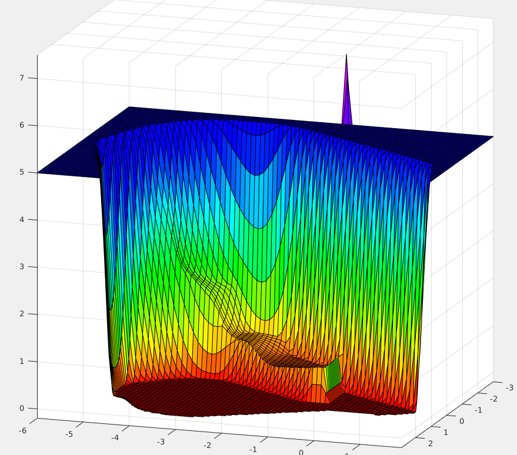

<div class="sidebar">
  

  <div class="container sidebar-sticky">
    <div class="sidebar-about">
      <h1>
        <a href="{{ site.baseurl }}">
          {{ site.title }}
        </a>
      </h1>
      <p class="lead">{{ site.description }}</p>
    </div>

    <nav class="sidebar-nav">
      <a class="sidebar-nav-item{% if page.url == site.baseurl %} active{% endif %}" href="{{ site.baseurl }}">Home</a>

      {% comment %}
        The code below dynamically generates a sidebar nav of pages with
        `layout: page` in the front-matter. See readme for usage.
      {% endcomment %}

      {% assign pages_list = site.pages %}
      {% for node in pages_list %}
        {% if node.title != null %}
          <!-- {% if node.layout == "page" %} -->
            <a class="sidebar-nav-item{% if page.url == node.url %} active{% endif %}" href="{{ node.url }}">{{ node.title }}</a>
          <!-- {% endif %} -->
        {% endif %}
      {% endfor %}

      <a class="sidebar-nav-item" href="{{ site.github.repo }}">GitHub</a>
    </nav>

    <nav class="sidebar-end">
      <p>Created with Jekyll in {{ site.time | date: '%Y' }}.</p>
    </nav>
  </div>
</div>
